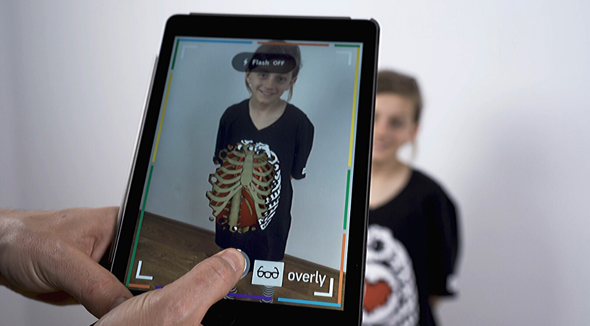
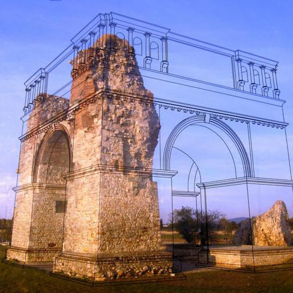
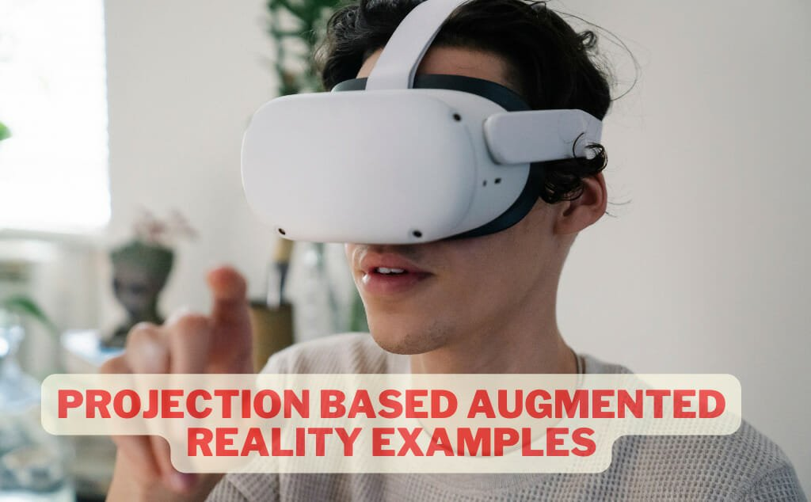

*Overlays digital content onto real-world environment.
*Uses camera ,sensors,and display to merge physical and virtual.
*Enhances user experience with interactive and immersive content.
*Can be experienced through various devices (smartphone,tablets,smart glasses,head-mounted displays).
1.Marker-based AR: Uses images or QR codes to trigger AR experiences
2.Markerless AR: Uses location ,GPS,and sensors to provide AR experiences

3.Superimposition-based AR: Overlays digital information onto real-world objects
4.projection based AR: projects digital information surfaces
5.Mixed reality(MR): Merges AR and virtual reality (VR) technologies